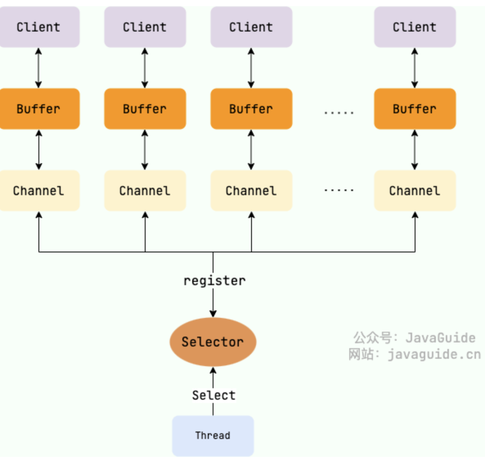
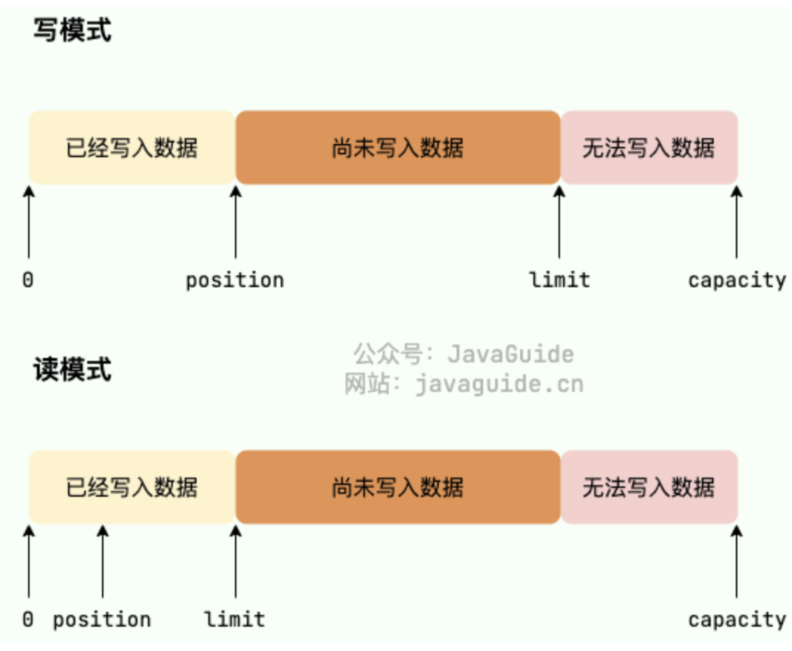
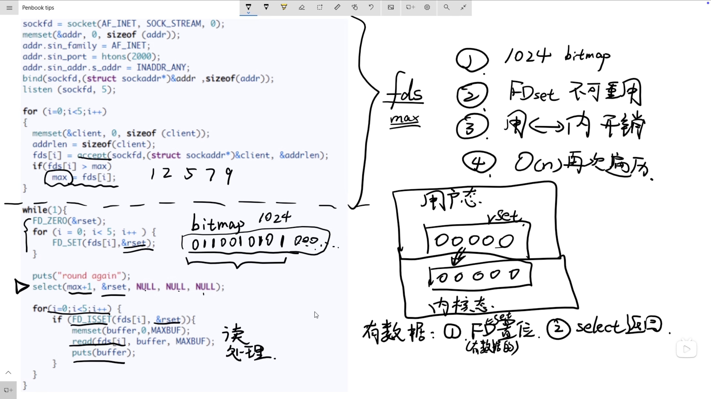

IO
Introduce
什么是IO
分成两个角度来进行分析:
-
从计算机系统结构来分析， I/O 描述来计算机系统与外界设备之间的通信过程
-
我们从软件程序来进行分析， I/O 是指软件程序与外部设备之间的数据交换过程
应用程序 IO
首先，我们知道一个进程的地址是分成 内核空间 和 用户空间 两个部分的。我们的应用程序是运行在用户空间的，而我们的设备驱动是运行在内核空间的。所以我们的应用程序是无法直接访问设备的，所以我们需要通过 系统调用 来进行访问。我们在 用户空间 发起调用请求，然后 内核空间 来帮我们完成系统调用。
而从应用程序的角度来看，我们的应用程序向操作系统的内核发起了 IO请求，操作系统负责执行具体的 IO请求。我们的应用程序只是发起了请求而已，具体的实现就是依靠操作系统来完成。
两个步骤来实现:
- 内核等待 I/O 设备准备好数据
- 内核将数据从内核空间拷贝到用户空间
IO分类
- 同步阻塞 I/O
- 同步非阻塞 I/O
- I/O 多路复用
- 信号驱动 I/O
- 异步 I/O
Java IO
BIO Blocking IO
BIO 属于同步阻塞IO,就是说进程在发起 IO 请求之后，不能执行其他的任务，直到这个 IO 请求完成了为止。这样就会导致我们的程序效率很低。
在常见的单线程，或者客户端连接数量不高的情况，是可行的。但是在 十万甚至百万级连接的时候，传统的 BIO 就不能满足需求了。
一个代码的例子
1 2 3 4 5 6 7 8 9 10 11 12 | |
我们上面的 Line 4 的 accept() 方法，其实就是一个阻塞方法，只有这个socket等到了客户端的连接请求，才会继续执行下面的代码。这样就会导致我们的程序效率很低。
NIO New IO
注意 NIO 在Java中表示的是多路复用模型，而不是非阻塞IO
一个线程可以处理多个 Socket 的连接。
我们还是以餐馆来作为例子，就是上面的 BIO 可以看成是 餐馆 只有1个座位，需要用户排队用餐。而 NIO 可以看成，每个用户的请求看成是取票，等到服务端叫号的时候，就可以进入用餐了。不用干等着，这个就是多路复用的特点。
对于设计一个高并发的系统，很自然的想法是设计一个多线程的方案，但是这也会带来 频繁上下文切换的代价。尤其是当我们的线程数目达到一定的数量的时候，这个代价就会变得很大。所以我们需要一个更好的解决方案。我们这里选择的就是 NIO 模型。用单线程来处理多个Socket连接。
关键特性

-
Buffer 缓冲区:
数据的存取是通过缓冲区进行的，而不是直接的进行读取或者写入数据流
-
Channel 通道:
它是连接数据源于缓冲区的媒介,通道是双向的，可以进行读取和写入操作.
-
Selector 选择器:
它是 NIO 中的一个核心组件，能够实现非阻塞IO，通过一个线程来处理多个通道的数据。
缓冲区 Buffer

-
在传统的 BIO 模型中，数据的读写是面向流的，分为字节流和字符流。
-
在NIO库中，所有的数据都是用缓冲区来解决，有点类似 BIO 中的缓冲流.NIO 在读取数据的时候，是直接在读到缓冲区。在写入数据的时候，写入缓冲区。
1 2 3 4 5 6 7 8 9 | |
buffer 对象从创建伊始，就默认是写模式，只有在调用 flip() 方法的时候，就切换成读模式。如果再次要切换成写模式，可以调用clear() 方法.
Buffer对象不能通过new 来调用构造方法创建对象，只能通过静态方法来实例化 Buffer.
最核心的几个方法介绍:
put():写数据get(): 读取缓冲区中的数据flip(): 切换模式从写模式切换到读模式,将limit值变成position的值，将position清空clear(): 从读模式切换到写模式
Channel 通道
BIO 中的通道是单向的，但是 NIO 中的通道是多向的。建立了与数据源之间的连接，可以利用它来读取和写入数据。因为 Channel 是全双工的，所以它好比流更好地映射底层操作系统的API 。同时支持读写操作。
一个通道具有不同的方法，而不是像 BIO 中会区分输入流和输出流.
1 2 3 4 5 6 7 8 9 10 11 12 13 14 15 16 17 18 19 20 21 22 23 24 25 26 27 | |
Selector
一个 Selector 可以同时的轮询多个 Channel.我们使用 epoll() 来代替传统的 select() 实现，也就没有了 1024/2048 的最大连接句柄的限制。（是通过结构体来解决的），我们只需要一个线程就就可以负责 selector 的轮询.
分为以下的四种事件:
SelectionKey.OP_ACCEPT表示通过接受连接的事件SelectionKey.OP_CONNECT表示通道完成连接的事件SelectionKey.OP_READ表示通道准备好读取的事件，也就是有数据可以读-
SelectionKey.OP_WRITE表示有数据可以写 -
int select()：监控所有注册的 Channel，当它们中间有需要处理的 IO 操作时，该方法返回，并将对应的 SelectionKey 加入被选择的 SelectionKey 集合中，该方法返回这些 Channel 的数量。 int select(long timeout)：可以设置超时时长的 select() 操作。int selectNow()：执行一个立即返回的 select() 操作，相对于无参数的 select() 方法而言，该方法不会阻塞线程。Selector wakeup()：使一个还未返回的 select() 方法立刻返回。……
下面是一个例子 :
1 2 3 4 5 6 7 8 9 10 11 12 13 14 15 16 17 18 19 20 21 22 23 24 25 26 27 28 29 30 31 32 33 34 35 36 37 38 39 40 41 42 43 44 45 46 47 48 49 50 51 52 53 54 55 56 57 58 59 60 61 62 63 64 65 66 67 68 69 70 71 72 73 74 75 76 77 78 79 80 81 82 83 | |
第一种比较简单的例子
我们简单粗暴的进行一直的轮询
在 Linux 环境下，我们的一切都是文件，所以我们用文件描述符来进行表示,假设现在有 5 个请求 A - E ：
1 2 3 4 5 6 7 8 | |
这样就会导致我们的 CPU 一直在进行轮询，这样就会导致我们的 CPU 的利用率很高，但是效率很低。但是我们依旧是让程序本身来进行轮询，这样的效率是比较低的。我们接着考虑三种优化过后的方案:
Select
select 是一个阻塞的方法。
区别是 select 是将用户态的数据请求交给内核态，然后内核态来进行轮询，这样就会减少了用户态的轮询，提高了效率。一直等待提交给内核态的这些请求是否已经有数据，如果有数据就返回，如果没有就继续等待。如果有数据的话就会返回一个 fd 的集合，然后我们就可以进行处理了。我们就可以在程序中进行处理了。
1 2 3 4 5 6 7 8 9 | |

我们虽然做了优化，让内核可以帮我们进行轮询，但是依旧有以下的几个缺点：
-
我们的
bitmap长度是有上限的，这个上限是1024，这个是一个固定的值，这样就会导致我们的fd的数量是有限的。也就是说我们可以同时处理的fd的数量是有限的。 -
我们的 FDSet 不可重用，因为在从内核态得到的 FDSET遍历之后，我们需要对其进行重置操作，这样就会导致我们的效率降低。
-
从用户态复制到内核态依旧是存在一定的开销的。
-
我们得到的 Select 返回值是 只知道目前存在Socket的数据是准备好了的，但是我们不知道具体哪些数据是准备好的。还是需要 \(O(N)\) 复杂度的遍历。
所以总的来看 select 并不够优秀，我们需要更好的解决方案。